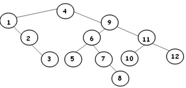

Árvores Binárias de Busca (ABB)
1. Conceitos Gerais
Uma Árvore Binária de Busca (ABB) é uma estrutura de dados que combina a flexibilidade da inserção em listas encadeadas com a eficiência da busca em vetores ordenados. Ela permite a busca binária a partir da raiz, mantendo os elementos organizados de forma hierárquica.
Princípio fundamental: Para qualquer nó: - Todas as chaves na subárvore esquerda são menores que a chave do nó; - Todas as chaves na subárvore direita são maiores que a chave do nó;
2. Estrutura e Propriedades
2.1 Características Principais
- Combina flexibilidade de inserção com eficiência de busca;
- Permite busca binária a partir da raiz;
- Todo nó não-terminal tem no máximo 2 filhos;
- Nós folha apontam para NULL (nós externos);
- Chave de cada nó é maior que todas as chaves da sua subárvore esquerda;
- Chave de cada nó é menor que todas as chaves da sua subárvore direita;
2.2 Visualização

Ordem de inserção: 4, 1, 9, 2, 11, 6, 3, 7, 12, 8, 5, 10
3. Implementação da ABB
3.1 Definições e Macros
Definições básicas para ABB:
#define info(A) (A.info)
#define key(A) (A.chave)
#define less(A, B) ((A) < (B))
#define eq(A, B) ((A) == (B))
#define exch(A, B) { Item t = A; A = B; B = t; }
#define compexch(A, B) if(less(B, A)) exch(A, B)
typedef int Key;
typedef struct data Item;
struct data {
Key chave;
char info[100];
};
typedef struct node STnode;
struct node {
Item item;
STnode *esq, *dir;
STnode *pai; // Opcional: ponteiro para o pai
};
3.2 Criação de Nó
Função para criar novo nó:
STnode *new(Item x, STnode *e, STnode *d) {
STnode *no = malloc(sizeof(STnode));
no->esq = e;
no->dir = d;
no->item = x;
no->pai = NULL; // Inicialmente sem pai
return no;
}
4. Operações Básicas
4.1 Busca em ABB
Busca recursiva em ABB:
STnode *STsearch(STnode *no, Key v) {
// Condição de parada: nó nulo ou chave encontrada
if (no == NULL || eq(v, key(no->item)))
return no;
// Buscar na subárvore esquerda se v for menor
if (less(v, key(no->item)))
return STsearch(no->esq, v);
else
return STsearch(no->dir, v);
}
// Versão iterativa da busca
STnode *STsearch_iterativo(STnode *no, Key v) {
while (no != NULL && !eq(v, key(no->item))) {
if (less(v, key(no->item)))
no = no->esq;
else
no = no->dir;
}
return no;
}
4.2 Inserção em ABB
Inserção recursiva em ABB:
STnode *STinsert(STnode *no, Item item) {
// Condição de parada: alcançou nó externo
if (no == NULL)
return new(item, NULL, NULL);
Key novo = key(item);
Key atual = key(no->item);
// Decidir onde inserir
if (less(novo, atual)) {
no->esq = STinsert(no->esq, item);
if (no->esq != NULL) no->esq->pai = no;
} else {
no->dir = STinsert(no->dir, item);
if (no->dir != NULL) no->dir->pai = no;
}
return no;
}
// Exemplo de uso
int main(int argc, char *argv[]) {
STnode *tree = NULL;
int n = 10; // Número de elementos
for (int i = 0; i < n; i++) {
Item v;
printf("Digite chave e info: ");
scanf("%d %s", &v.chave, v.info);
tree = STinsert(tree, v);
}
return 0;
}
4.3 Remoção em ABB
Remoção em ABB:
STnode *STdelete(STnode *no, Key remove) {
if (no == NULL) return NULL; // Chave não encontrada
Key atual = key(no->item);
// Procurar o nó a ser removido
if (less(remove, atual)) {
no->esq = STdelete(no->esq, remove);
} else if (less(atual, remove)) {
no->dir = STdelete(no->dir, remove);
} else {
// Nó encontrado - eq(atual, remove)
// Caso 1: Nó com apenas um filho ou nenhum
if (no->esq == NULL) {
STnode *temp = no->dir;
free(no);
return temp;
} else if (no->dir == NULL) {
STnode *temp = no->esq;
free(no);
return temp;
}
// Caso 2: Nó com dois filhos
// Encontrar sucessor (menor valor na subárvore direita)
STnode *temp = minimo(no->dir);
// Copiar dados do sucessor para este nó
no->item = temp->item;
// Remover o sucessor
no->dir = STdelete(no->dir, key(temp->item));
}
return no;
}
// Função auxiliar para encontrar o nó mínimo
STnode *minimo(STnode *no) {
STnode *atual = no;
while (atual != NULL && atual->esq != NULL)
atual = atual->esq;
return atual;
}
4.4 Operações Auxiliares
Operações auxiliares para ABB:
// Encontrar nó mínimo (menor chave)
STnode *minimo(STnode *no) {
if (no == NULL) return NULL;
while (no->esq != NULL)
no = no->esq;
return no;
}
// Encontrar nó máximo (maior chave)
STnode *maximo(STnode *no) {
if (no == NULL) return NULL;
while (no->dir != NULL)
no = no->dir;
return no;
}
// Encontrar sucessor (próximo nó em ordem)
STnode *sucessor(STnode *no) {
if (no == NULL) return NULL;
// Se há subárvore direita, sucessor é o mínimo dela
if (no->dir != NULL)
return minimo(no->dir);
// Caso contrário, subir até encontrar um ancestral
// que seja filho esquerdo
STnode *pai = no->pai;
while (pai != NULL && no == pai->dir) {
no = pai;
pai = pai->pai;
}
return pai;
}
// Encontrar predecessor (nó anterior em ordem)
STnode *predecessor(STnode *no) {
if (no == NULL) return NULL;
// Se há subárvore esquerda, predecessor é o máximo dela
if (no->esq != NULL)
return maximo(no->esq);
// Caso contrário, subir até encontrar um ancestral
// que seja filho direito
STnode *pai = no->pai;
while (pai != NULL && no == pai->esq) {
no = pai;
pai = pai->pai;
}
return pai;
}
5. Análise de Complexidade
5.1 Complexidade das Operações
| Operação | Melhor Caso | Caso Médio | Pior Caso |
|---|---|---|---|
| Busca | O(log n) | O(log n) | O(n) |
| Inserção | O(log n) | O(log n) | O(n) |
| Remoção | O(log n) | O(log n) | O(n) |
| Mínimo/Máximo | O(log n) | O(log n) | O(n) |
| Sucessor/Predecessor | O(1) | O(1) | O(n) |
5.2 Fatores que Influenciam a Performance
- Árvore balanceada: Altura ≈ log₂n, operações O(log n);
- Árvore degenerada: Altura = n, operações O(n);
- Ordem de inserção: Inserções ordenadas criam árvores degeneradas;
6. Vantagens e Desvantagens
6.1 Vantagens
- Busca eficiente: O(log n) em árvores balanceadas;
- Inserção/Remoção: Mais eficiente que arrays ordenados;
- Flexibilidade: Tamanho dinâmico;
- Ordenação: Percursos inordem retornam elementos ordenados;
6.2 Desvantagens
- Desbalanceamento: Pode degenerar para lista encadeada;
- Complexidade: Implementação mais complexa que arrays;
- Overhead: Armazenamento de ponteiros;
- Balanceamento: Necessidade de algoritmos AVL ou Red-Black;
7. Aplicações
- Bancos de dados: Índices para busca rápida;
- Compiladores: Tabelas de símbolos;
- Sistemas operacionais: Escalonamento de processos;
- Redes: Roteamento de pacotes;